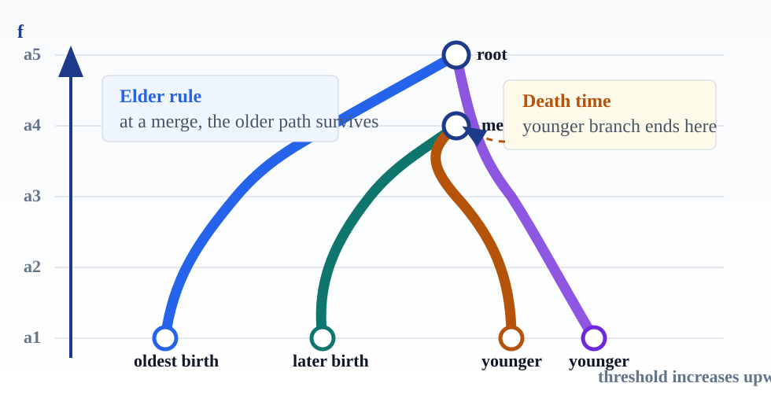
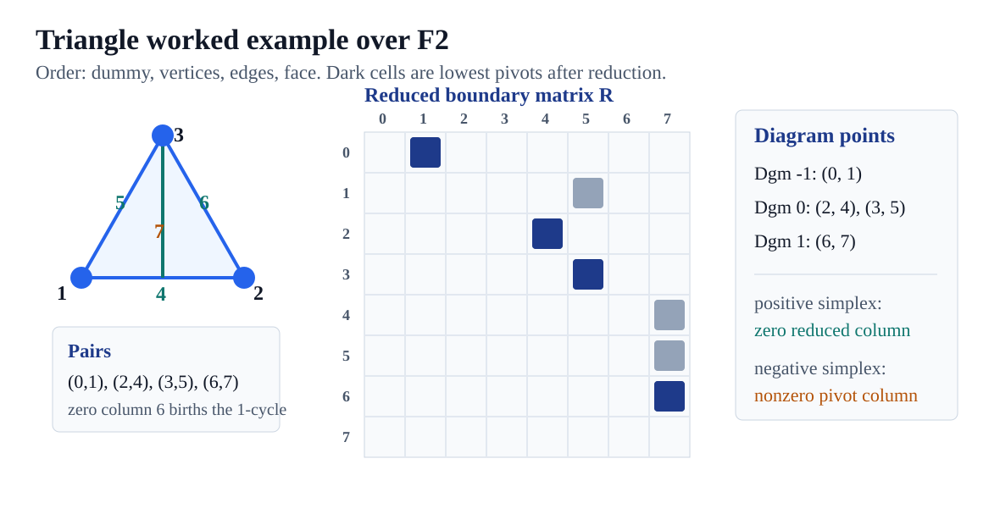
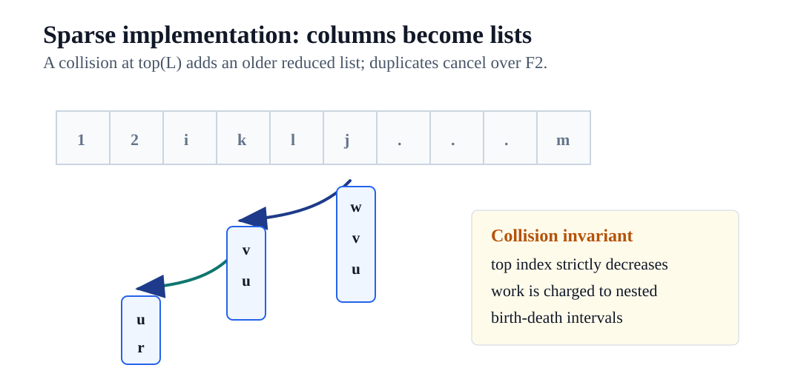
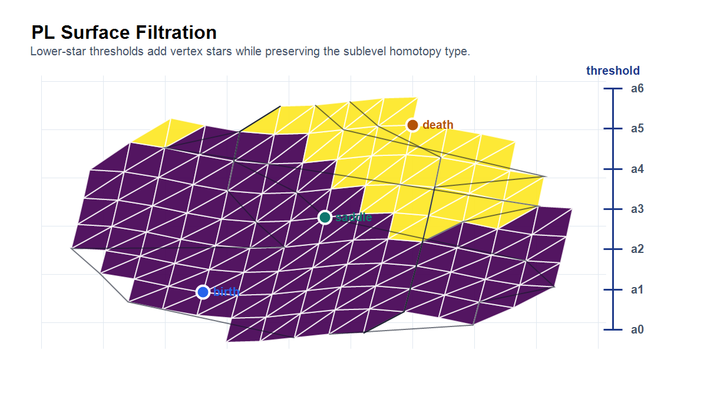
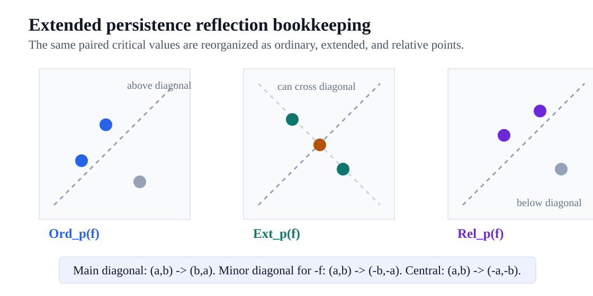
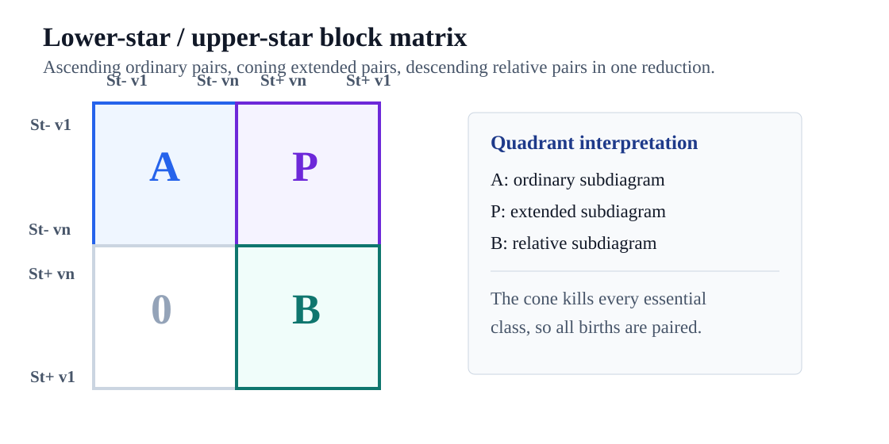
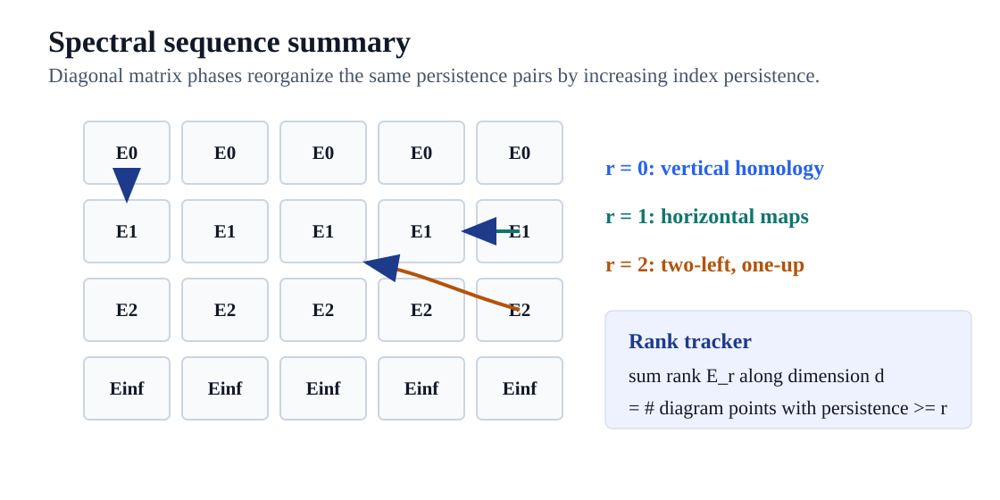

Topological Persistence
Scale-aware homology over filtrations: birth, death, diagrams, reductions, and reorganizations of the same information.

Scale, Noise, Feature
Persistence does not decree what is noise. It records the scale at which each homology class exists, so the judgment can be made explicitly.
Small Scale
Many components and short loops appear. Some are meaningful, some are sampling artifacts.
Middle Scale
Classes that remain across several thresholds become visible as long bars or high diagram points.
Large Scale
Fine structure is filled in or merged. Essential classes are the ones that survive the whole filtration.
Elder Rule
Rule
At a merge, the older component continues and the younger component dies.
Persistent Component Count
\( \beta(a,b) = \# \{ \hbox{merge-tree paths spanning } [a,b] \}. \)
Why This Convention?
Without the Elder Rule, the path decomposition can disagree with the actual component count between thresholds.
Filtration From A Function
Monotone Requirement
If \( \sigma \leq \tau \), then \( f(\sigma) \leq f(\tau) \).
Every threshold sublevel set is then a subcomplex.
Filtration
\( \emptyset = K_0 \subseteq K_1 \subseteq \cdots \subseteq K_n = K \)
Each \(K_i\) collects all simplices with value at most \(a_i\).
Inspection Asset
Open the threshold lab to verify that every visible state is closed under taking faces.
Homology Through The Filtration
Definition
\(H_p^{i,j} = \operatorname{im}\big(H_p(K_i) \to H_p(K_j)\big)\)
\( \beta_p^{i,j} = \operatorname{rank} H_p^{i,j}\)
Birth
A class in \(H_p(K_i)\) is new if it is not inherited from \(K_{i-1}\).
Death
A born class dies entering \(K_j\) when its image first merges into an older image.
Persistence Diagram Read-Off

Point
birth \(a_i\), death \(a_j\), persistence \(a_j-a_i\)
Persistent Betti Number
\(\beta_p^{k,l} = \#\{(a_i,a_j): i \leq k,\ j > l\}\)
Memory
The diagram encodes all ranks of all image groups \(H_p^{i,j}\).
Matrix Reduction
Compatible Ordering
Faces precede cofaces, and lower function values precede higher values.
Boundary Matrix
\(\partial[i,j]=1\) when \(\sigma_i\) is a codimension-one face of \(\sigma_j\).
Pairing Rule
If \(i=\operatorname{low}(j)\), then \((a_i,a_j)\) is a finite diagram point in the dimension of \(\sigma_i\).
R = boundary
for j = 1 to m:
while some j0 < j has low(j0) = low(j):
add column j0 to column j over F2
zero column -> birth
pivot column -> death
Invariant
No two nonzero reduced columns have the same lowest row.
Triangle Worked Example

Pair List
\((0,1), (2,4), (3,5), (6,7)\)
Diagram Points
Dgm0 has \((2,4)\) and \((3,5)\). Dgm1 has \((6,7)\).
Check Record
triangle-reduction-gf2.json records \( \partial^2=0 \), unique pivots, and diagram points.
Sparse Implementation

Data Structure
Array entries store sorted lists. The top element is the current lowest one.
Collision
When the target entry is occupied, add lists and cancel duplicate simplex indices over F2.
Runtime Lens
For a \(p\)-simplex with index persistence \(j-i\), list work is bounded by a dimension factor times \((j-i)^2\).
Zeroth Persistence Via Union-Find
Vertices
Every vertex births a component. Name a component by its oldest vertex.
Edge Case: Two Components
The edge kills the younger component and unions the two sets.
Edge Case: Same Component
The edge does not affect Dgm0; it creates a graph cycle for the next dimension.
union-find-0d-check.json matches the triangle reduction pairs.
PL Surface Filtration

Vertex Values
Assume distinct vertex heights \(f(v_1)<\cdots<f(v_n)\).
Lower Star
\(\operatorname{St}^- v_i=\{\sigma\in\operatorname{St} v_i: x\in\sigma \Rightarrow f(x)\leq f(v_i)\}\)
Equivalence
The sublevel set and the lower-star subcomplex have the same homotopy type between critical vertex values.
First Diagram From The Complement
Reflection Rule
\((a,b)\in \operatorname{Dgm}_1(f) \iff (-b,-a)\in \operatorname{Dgm}_0(-f)\)
Reason
A finite loop event for \(f\) is a component event in the complementary superlevel evolution.
Infinite Points
Edges not used as death events in either lower-star pass become infinite one-dimensional classes.
Extended Persistence
Ordinary Pass
\(0=H_p(M_{b_0})\to\cdots\to H_p(M_{b_n})\)
Relative Return
\(H_p(M,M^{b_n})\to\cdots\to H_p(M,M^{b_0})=0\)
Consequence
Essential ordinary classes are paired during the relative part of the sequence.
Duality And Symmetry

Duality
\(\operatorname{Ord}_p(f)=\operatorname{Rel}_{d-p}(f)^T\)
\(\operatorname{Ext}_p(f)=\operatorname{Ext}_{d-p}(f)^T\)
Symmetry For \( -f \)
Ordinary and relative pieces reflect across the minor diagonal; extended pieces rotate centrally.
Check
The slide-local check file records the reflection maps and rank-tracker expectations.
Lower/Upper Star Block Matrix

A
Ascending lower-star boundary matrix: ordinary subdiagram pivots.
P
Permutation block matching original simplices with cone simplices: extended pivots.
B
Descending upper-star boundary matrix: relative subdiagram pivots.
Spectral Sequence Summary

Matrix View
Block the boundary matrix by filtration increments, then reduce diagonal bands phase by phase.
Rank Summary
\(\sum_p \operatorname{rank} E^r_{p,q} = \#\{x\in \operatorname{Dgm}_{p+q}(f): \operatorname{pers}(x)\ge r\}\)
Inspection Contract
slide-checks.json covers monotonicity, pivots, diagrams, union-find, reflections, rank tracking, and asset nonblankness.